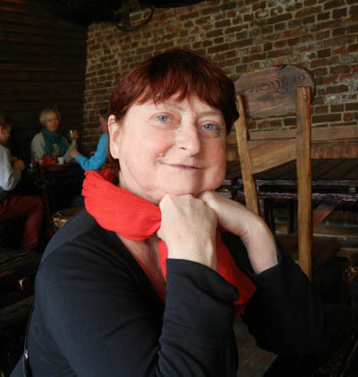
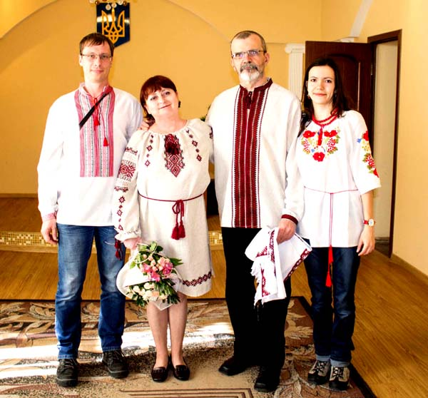
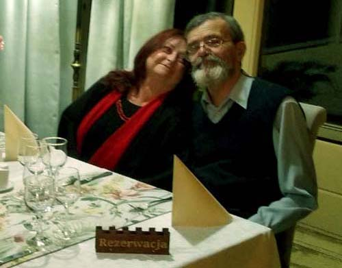
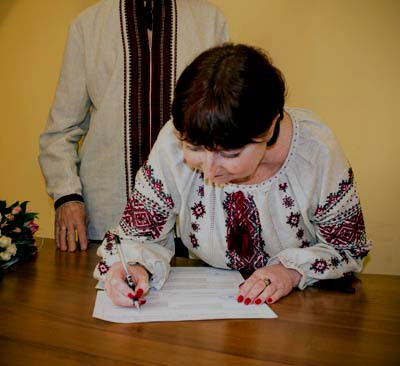
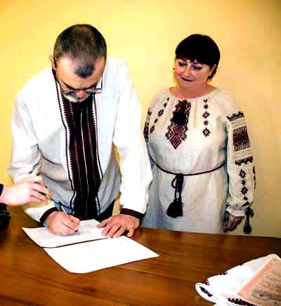
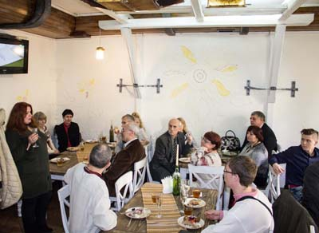
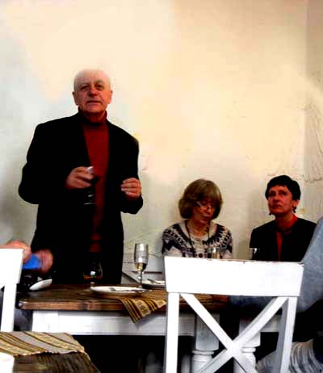
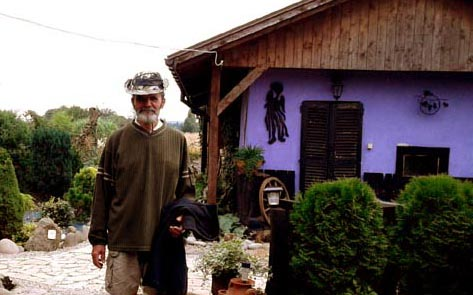

Po śmierci Lucjana nic mnie już nie cieszyło. Życie w Moczydle stało się jałowe i bezużyteczne. Najgorsza była perspektywa świąt, bo celebrowanie czegokolwiek nie miało już znaczenia. Jedynym miejscem, gdzie nie czułam się aż tak samotna, był Lwów. Mieszkałam tam 5 lat, nadal mam w tym mieście najbliższych przyjaciół, z jakich wielu traktuję jak rodzinę, postanowiłam więc pojechać tam na zimę. 6 grudnia 2015 roku spakowałam niezbędne rzeczy, wsiadłam w samochód i ruszyłam. Sama jak palec.
Lwów, zwłaszcza ten przedświąteczny, ma to do siebie, że mimo śniegu i mrozu rozgrzewa od środka każdego. Moi lwowscy bliscy dbali, bym się nie smuciła.
Choć nie jestestem wierząca, świętuję czas przesilenia zimowego bardzo uroczyście, postanowiłam więc poszukać ciekawych, starodawnych przepisów kuchni ukraińskiej, by coś na ten wieczór przygotować. Tak trafiłam na stronę, gdzie skopiowano bardzo starą książkę kucharską. Witryna była ubożuchna graficznie, ale bezcenna jako dokument. Na stronie znalazłam link do krótkiego wideo o tym, jak zrobić dobre placki ziemniaczane. Wszystko to było nieco staroświeckie, ale wzruszające. Postanowiłam napisać do autora z podziękowaniami za taki zabytek.
Odpowiedź nadeszła po paru dniach. Oznaczało to, że smakosz nie siedzi od rana do nocy przy komputerze, lecz ma też inne zajęcia. Jeszcze bardziej zauroczyła mnie odpowiedź - krótka i rzeczowa. Z drugiej jednak strony została urażona moja kobieca ambicja, bo przecież jak to tak! Ja napisałam chwalebną episotłę, a w zamian dostałam trzy zdania. O nie!
Z nudów postanowiłam rozwinąć temat kulinarny, bo przecież uważam się za eksperta w tej materii.Moje zabiegi trafiły jednak w próżnię. W końcu dostałam wyjaśnienie, że opóźnienia w korespondencji wiążą się z tym, że córka i zieć urządzają nowe mieszkanie, a mój respondent szyje im zasłony i pomaga w meblowaniu. Udało nam się też na chwilę nawiązać rozmowę przez skypa, ale nie były to wyżyny elokwencji. Poddałam się.
Za kilka dni znów przyszła wiadomość, że zasłony już uszyte, uprasowane i powieszone. Usiłowałam drążyć temat, raczej z braku innych niż z ciekawości. Pogadaliśmy przez skypa, ale przypominało to próbę nawiązania kontaktu z kosmitami. Odpuściłam. Ale że w paru zdaniach zająknęłam się na temat mojej moczydelskiej zagrody, postanowiłam na koniec znajomości wrzucić kilka zdjęć, żeby odludek wiedział, co traci.
Zdjęcia, a raczej to, co przedstawiały, wyraźnie spodobały się mojemu anonimowemu koledze. Tematy posypały się jeden za drugim, ale dzieliło na ponad 600 kilometrów, mój kulinarny znajomy mieszkał bowiem w Kijowie. Okazało się jednak, że dawno nie był we Lwowie, i że także jest samotny, bo niedawno zmarła mu ukochana żona, a dzieci mają już swoje rodziny, więc nic nie stoi na przeszkodzie, by przywitać Nowy Rok we Lwowie.
Umówiliśmy się, że przyjedzie pod koniec grudnia, ale bez dokładnego precyzowania, w jaki dzień. Trochę mi to komplikowało sytuację, bo w tym świątecznym czasie byłam umówiona z wieloma osobami na różne dni.
25 grudnia o dziewiątej godzinie zastukała w drzwi apartamentu właścicielka. Powiadomiła mnie, że w korytarzu czeka jakiś mężczyzna i czy ma go wpuścić. Oczywiście, odrzekłam, choć byłam w nocnej koszuli, rozczochrana i niewyspana. W drzwiach stanął wysoki, przystojny mężczyzna z czerwoną, piękną różą i Kijowskim Tortem. To był Mikołaj.
Spacerowaliśmy potem po Lwowie, rozmawiając o wszystkim, o czym mogą rozmawiać starzy ludzie, którzy zostali bez kochanych towarzyszy życia. Od razu wyszło na jaw, że jesteśmy z dwóch bardzo odległych od siebie planet, a wspólnych tematów trudno się doszukać. Mimo tego spędzaliśmy razem całe dni i ani trochę się nie nudziliśmy. Postanowiliśmy pojechać razem do Kijowa, bo jego córka i zięć zaprosili nas na wieczerzę wigilijną (6 stycznia).
Tematów do rozmów przybywało, a najwięcej dotyczyło życia na wsi. Wybraliśmy się też razem w Karpaty, gdzie Mikołaj jeździł na nartach w górskim kurorcie Bukowel. Bardzo nas ta wyprawa zbliżyła i postanowiliśmy zaryzykować. Było jasne, że Mikołaj przyjedzie do Moczydła, ale potrzebował do tego zaproszenia ode mnie. Musiałam wrócić do Polski, a następnie pojechać do Ukrainy z zaproszeniem. W tym czasie uradziliśmy, że rozumnie będzie, jeśli Mikołaj w Moczydle zostanie na zawsze, a najpraktyczniejszą drogą uniknięcia kłopotów na granicy okazał się ślub.
18 lutego 2016 roku złożyliśmy w lwowskim urzędzie stanu cywilnego niezbędne dokumenty, a 19 marca już byliśmy małżeństwem. Na przyjęcie zaprosiliśmy najbliższych przyjaciół. Oczywiście byli też córka z zięciem. Od tego dnia także moja córka i mój zieć.
Z pozoru absolutnie wszystko nas różni. Mikołaj jest z wykształcenia inżynierem, całe życie pracował jako programista, głównie w banku. Moje twórcze i artystyczne zainteresowania są mu dalekie, ale bardzo mnie we wszystkim wspiera i to jest najcenniejsze.
Z szacunku do męża postanowiłam zmienić nazwisko. Uważałam, że jeśli on zostawił wszystko i przeprowadził się do Moczydła, by wspierać mnie w niekończącej się pracy w zagrodzie, to i ja mogę zrobić podobnie




